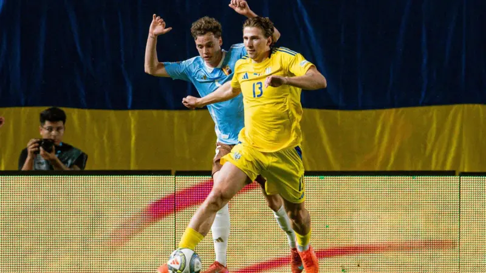
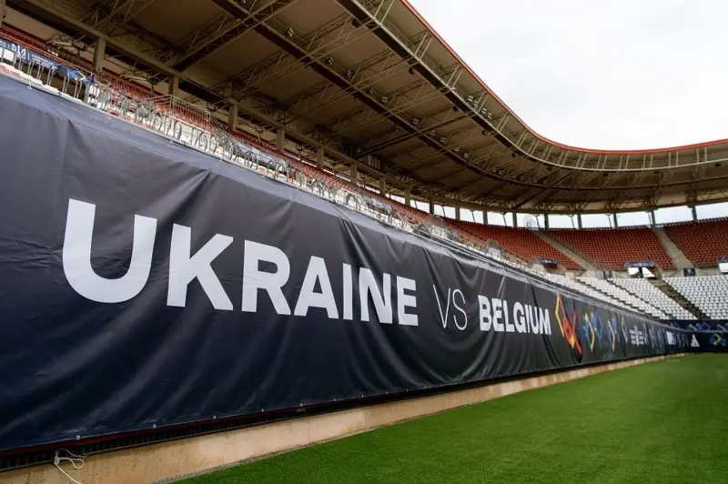
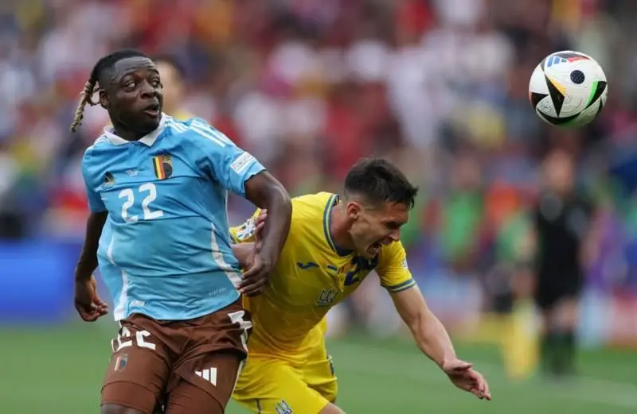

Україна перемогла Бельгію в плей-офф Ліги Націй. Що це означає і де дивитись відповідь
Відділ новин
ВВС Україна
20 березня 2025
Оновлено: 21 березня 2025
У четвер ввечері футбольні збірні України та Бельгії провели перший матч раунду плей-офф в Лізі Націй. Для обох команд це перший матч у цьому році.
Україна перемогла з рахунком 3-1. У першому таймі Бельгія відкрила рахунок, а у другому українці відігрались і забили аж три голи. М'ячі на рахунку Олексія Гуцуляка, Владислава Ваната та Іллі Забарного.
Україна і Бельгія в очному протистоянні вирішуватимуть, хто гідний провести наступний розіграш Ліги Нації УЄФА в елітному дивізіоні А, де грають 16 найсильніших збірних Європи.
Минулого року Україна грала в другому за силою дивізіоні В і посіла друге місце у своїй групі з Грузією, Албанією і Чехією. Першими стали чехи, які і вийшли напряму до елітного дивізіону.
Українцям зараз треба подолати бельгійців, які минулого року посіли третє місце в групі з французами, італійцями та ізраїльтянами.
20 березня о 21: 45 за київським часом в іспанській Мурсії на стадіоні "Енріке Рока де Мурсія" Україна провела перший поєдинок проти Бельгії. Це був формально "домашній" матч українців, які після початку повномасштабної війни у 2022 році вимушені грати за кордоном.
Матч-відповідь пройде 23 березня в Бельгії. Прямі трансляції - на MEGOGO Sport та MEGOGO Футбол 1. Національні телеканали поєдинки не будуть показувати.
Українці в цьому протистоянні не зможуть розраховувати на своїх зірок - Артема Довбика з римської "Роми" і Михайла Мудрика з лондонського "Челсі".
Бельгійці, своєю чергою, зараз проходять етап оновлення команди. Новий тренер Руді Гарсія викликав до збірної багато молодих талантів, але також розраховує на досвідчених зіркових гравців Ромело Лукаку ("Наполі"), Тібо Куртуа ("Реал Мадрид") і Кевіна де Брюйне ("Манчестер Сіті").
Чому ці матчі важливі
Результат протистояння з Бельгією напряму не впливає на те, чи потрапить збірна України на найближчі великі футбольні турніри - Чемпіонат світу-2026 (пройде в Канаді, США і Мексиці) та Чемпіонат Європи-2028 (прийматимуть Велика Британія та Ірландія).
У разі перемоги українці піднімуться до елітного дивізіону Ліги Нації, в якому вже грали у сезоні 2020-21.
Тоді Україна вилетіла лише через те, що їй зарахували технічну поразку в матчі зі Швейцарією. Той поєдинок не відбувся, бо декілька українських гравців захворіли на коронавірус і місцева влада в Швейцарії скасувала матч, відправивши всю збірну України на карантин.
Крім можливої участі в елітному дивізіоні в сезоні 2025-26 перемога в матчі з Бельгією матиме значення для рейтингу збірних. Кращий рейтинг в Лізі Нації дозволить мати кращі позиції при жеребкуванні відбору на Євро-2028.
Тобто, якщо українці гратимуть в елітному дивізіоні, то ймовірно будуть не нижче другого кошику при жеребкуванні.
Також раніше при відборі на Чемпіонат Європи враховувалась присутність збірних в елітному дивізіоні Ліги Націй, що дозволяло напряму потрапляти до раунду плей-офф не зважаючи на те, яке місце вони посіли в своїй групі.
Принаймні раніше ця схема працювала, але не відомо, як це буде при відборі на Євро-2028.
Поразка у матчі з Бельгією також не має стати катастрофою для України. По-перше, ця збірна об'єктивно сильніше і посідає набагато вище місце в рейтингу ФІФА (8 проти 25-го в України).
На Євро-2024 Бельгія і Україна грали в одній групі, матч закінчився нульовою нічиєю, але далі пройшли бельгійці за додатковими показниками.
Якщо українці поступляться, то залишаться в дивізіоні В, гратимуть з рівними або й слабшими суперниками і матимуть більше шансів набрати залікові бали в групі.
Відповідно, матимуть вищі шанси посісти перші місця та знову ж таки потрапити до плей-офф відбору на Євро-2028.
Відбір на Чемпіонат світу 2026 року стартує восени цього року і до матчів України в Лізі Націй стосунку не має. З календарем матчів цього відбору можна
ознайомитись тут.Ecobazar
Maecenas lacinia felis nec placerat sollicitudin. Quisque placerat dolor at scelerisque imperdiet. Phasellus tristique felis dolor.
Maecenas elementum in risus sed condimentum. Duis convallis ante ac tempus maximus. Fusce malesuada sed velit ut dictum. Morbi faucibus vitae orci at euismod. Integer auctor augue in erat vehicula, quis fermentum ex finibus.
Mauris pretium elit a dui pulvinar, in ornare sapien euismod. Nullam interdum nisl ante, id feugiat quam euismod commodo. Sed ultrices lectus ut iaculis rhoncus. Aenean non dignissim justo, at fermentum turpis. Sed molestie, ligula ut molestie ultrices, tellus ligula viverra neque, malesuada consectetur diam sapien volutpat risus. Quisque eget tortor lobortis, facilisis metus eu, elementum est. Nunc sit amet erat quis ex convallis suscipit. ur ridiculus mus.